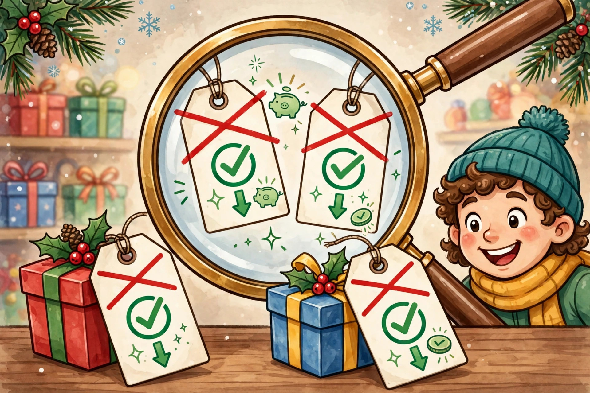

Price tracking: real deal vs. fake deal

"Was $200, now $80!" feels like a victory — until you learn it was $85 all through October and never actually sold for $200. Fake discounts are one of the oldest retail tricks, and the holiday season is their Super Bowl. This guide is about a simple habit that protects you: track the price yourself, and judge every "deal" against the real history, not the sticker.
How fake deals work
Retailers have a few well-worn moves. None of them are illegal in most places (regulations vary, and "was" prices usually just have to reflect some past price), but all of them are designed to make you feel urgency:
- The inflated "was" price. A price the item rarely or never actually sold at becomes the comparison point, so the discount looks huge.
- The slow creep. The price rises in September, then drops back to normal in November — advertised as a "Black Friday price."
- The doorcrasher. A handful of units at a genuine discount to get you in the store (or on the site), where everything else is full price.
- The bundle discount. "Save $50 when you buy three" — great if you wanted three, wasteful if you wanted one.
None of this means every sale is a scam. Real discounts absolutely exist, especially on older models being cleared out. The point isn't suspicion — it's having your own numbers so you don't need to trust the sticker.
Build a simple price watch list
You don't need fancy tools. When you know what you want to buy (that's the gift list part), make a note for each item:
- The item, exactly (model matters — prices differ between versions).
- The price today, with the date and where you saw it.
- A "buy price" — the price at which you'd happily buy it.
A notes app, a simple spreadsheet, or even paper works. Then check the list weekly from October onward. You're looking for two things: the item hitting your buy price, and the price dropping relative to its own history rather than relative to a claimed "was" price.
Use price-history tools where you can
For online shopping, several free tools show an item's price history at a glance — you can see whether today's "sale" price is actually lower than what the item sold for over the last few months. The exact tools change over time, so search for a "price tracker" for your favorite stores; most are free browser add-ons or websites. A quick history check takes thirty seconds and can save you from buying something at a "discount" that was cheaper last month.
Know the real calendar of sales
Not every holiday-season sale is equal. In general:
- Black Friday / Cyber Monday: genuinely good for electronics, small appliances, and last year's models. Mediocre for everything else.
- Early December: often better for toys and gifts — stock is full and retailers are competing.
- After Christmas: the deepest discounts, but only useful for next year (decorations, wrapping paper, some gift staples).
- Random "flash sales": usually ordinary prices with a countdown timer. Check your price history before biting.
The per-person price ceiling is your shield
Remember the per-person amounts from your holiday number? They're your best defense against fake deals. A "$100 value for $40" item you didn't plan to buy is still $40 you didn't plan to spend. The question is never "is this a good deal?" — it's "is this the best use of the $40 I set aside for this person?" Buy against your list, not against the sticker.
Gift cards and cash have a place
If tracking prices and timing sales sounds exhausting, there's a perfectly good alternative: gift cards and cash. They can't be a "fake deal," they're always exactly the right size, and nobody has ever been disappointed by money in a card from someone who cares. For hard-to-shop-for people, this isn't the lazy option — it's the smart one.
A deal checklist before you buy
Run through this in thirty seconds before any "too good to miss" purchase:
- Is this item on my list?
- Is the price at or below my buy price?
- Does the price history show this is a real drop, not a markup-then-discount?
- Would I still buy it if it weren't "on sale"?
- Does it fit the person's amount I already set?
Five yeses? Buy it with confidence. Any no? Walk away — another real deal will come along. The season is long, and the best shoppers aren't the ones who grab the fastest; they're the ones who buy with a list and a number.
This is general information about personal budgeting, not financial advice. Everyone's situation is different.
Keep readingNext: Avoiding January debt →